2 + 3[1] 5Intro to R and Excel
Kembali ke Pengantar Sains Data
Selama praktikum PSD (Pengantar Sains Data), kita akan menggunakan software Microsoft Excel, serta bahasa pemrograman R melalui software RStudio. Berikut ini adalah petunjuk untuk menginstal software tersebut.
Untuk modul instalasi yang lebih spesifik pada masing-masing operating system, silakan lihat di link berikut:
Microsoft Excel sebenarnya adalah software berbayar, sebagaimana produk Microsoft lainnya dalam serial Office 365. Untungnya, Universitas Indonesia menyediakan layanan Office 365 untuk tiap email UI, meliputi aplikasi berikut:
Sehingga, tiap mahasiswa UI bisa melakukan aktivasi Office 365 agar bisa menggunakan software tersebut secara gratis. Tidak hanya untuk PSD, produk Microsoft akan cukup menunjang selama perkuliahan, terutama ketika ada tugas kuliah yang diketik, seperti menyiapkan makalah dan presentasi, apalagi tugas kelompok (bisa bekerja sama, memanfaatkan OneDrive).
Setelah aktivasi, barulah produk yang diinginkan bisa di-download lalu diinstal, agar bisa digunakan. Berikut ini kami jelaskan langkah-langkahnya.
Informasi lebih lanjut juga bisa dilihat di tautan resmi berikut: https://dsti.ui.ac.id/mulai-dengan-office-365/
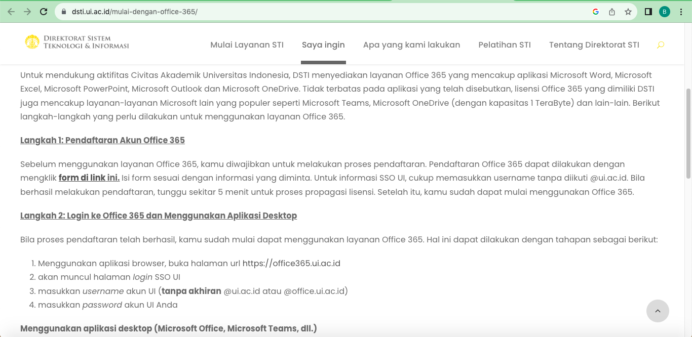
Buka tautan https://sso.ui.ac.id/office365
Tampilannya seperti berikut:
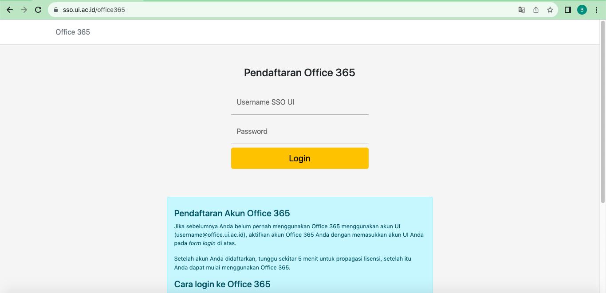
Masukkan username SSO UI serta password milik pribadi, lalu tekan “Login”. Akun SSO yang dimaksud adalah akun yang sama yang biasa digunakan untuk login ke SIAK NG, ke EMAS2, dan sebagainya, yaitu tanpa akhiran @ui.ac.id maupun akhiran @office.ui.ac.id
Tunggu sekitar 5 (lima) menit, lalu buka tautan https://office365.ui.ac.id
Apabila perlu login, seperti pada tampilan berikut, silakan login dengan akun SSO yang sama seperti langkah sebelumnya.
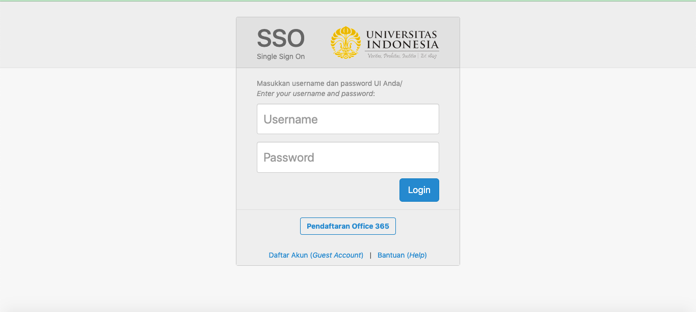
Untuk halaman ini, bebas memilih No atau Yes. Sebaiknya pilih Yes agar tidak terlalu sering login ke depannya.
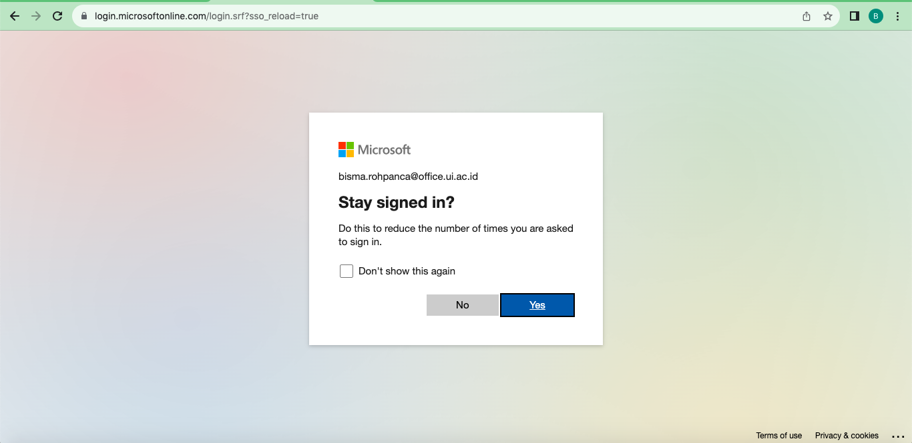
Login berhasil.
Kunjungi tautan https://office365.ui.ac.id dan lakukan login kalau belum.
Pilih “Install and more”, lalu tekan “Install Microsoft 365 apps”, seperti berikut.
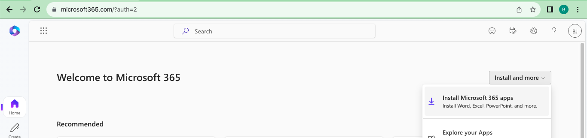
Akan muncul tampilan seperti berikut. Tekan tombol “Install Office” untuk men-download suatu installer berukuran sekitar 3 GB.
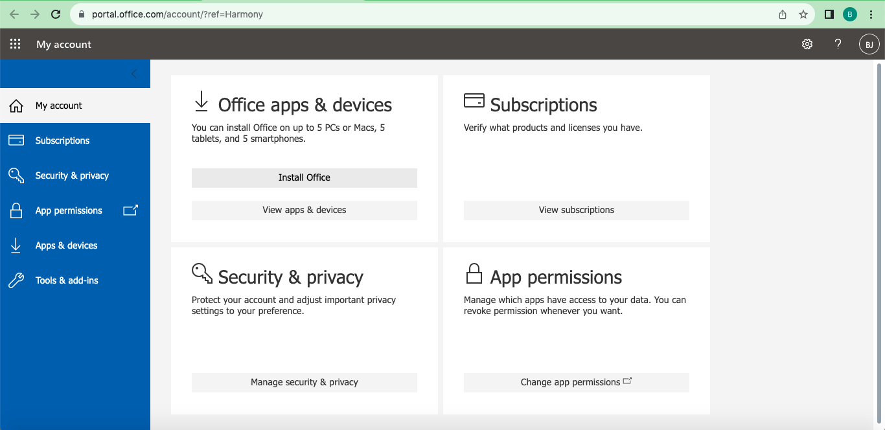
Ikuti petunjuk instalasi yang diberikan. Pastikan Excel terpilih sebagai salah satu aplikasi yang ingin diinstal.
Setelah instalasi selesai, bukalah Excel. Akan muncul tampilan seperti berikut. Tekan tombol “Sign in”.
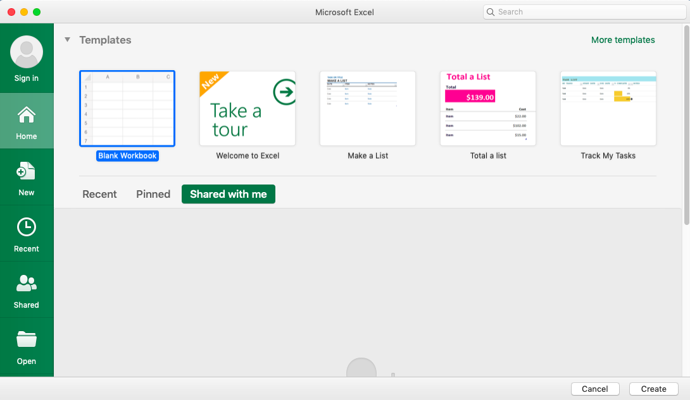
Setelah itu, muncul tampilan login seperti berikut. Masukkan email UI, tetapi dengan akhiran @office.ui.ac.id, lalu tekan “Next”
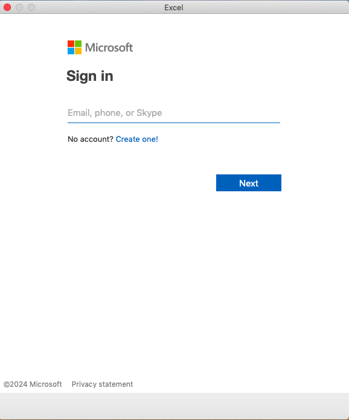
Akan muncul tampilan login SSO, seperti berikut. Gunakan username SSO UI dan password, lalu tekan “Login”
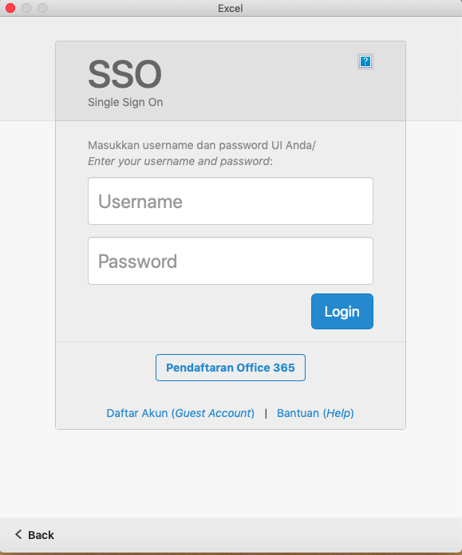
Selamat, login berhasil. Excel sudah bisa digunakan, bahkan file yang disimpan di OneDrive juga bisa diakses.
Kunjungi tautan https://cran.r-project.org/ (atau coba searching “CRAN R” dan pencet website pertama yang muncul). Isinya akan seperti berikut:
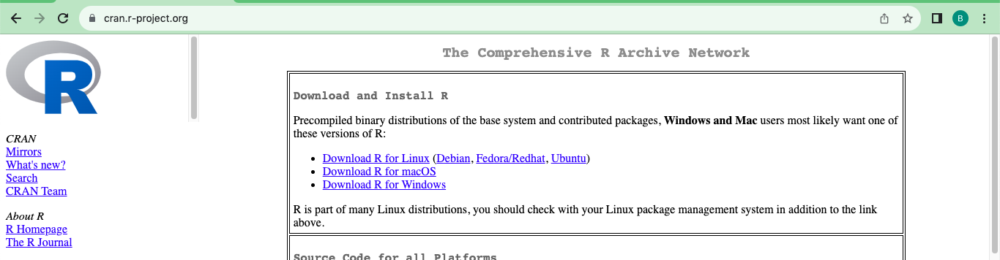
Pilih tautan yang sesuai dengan operating system (sistem operasi) dari laptop atau perangkat yang sedang digunakan.
Apabila perangkatmu menggukanan operating system Windows, tekan “Download R for Windows”.
Apabila perangkatmu menggukanan operating system macOS, tekan “Download R for macOS”.
Langkah ketiga dan seterusnya tergantung operating system, tetapi harusnya cukup mirip.
Setelah itu, muncul laman seperti berikut. Tekan “base”.
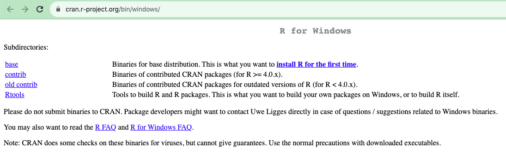
Di laman berikut, akan muncul versi R terbaru yang tersedia. Tekan tautan “Download R-… for Windows” tersebut untuk memulai download.
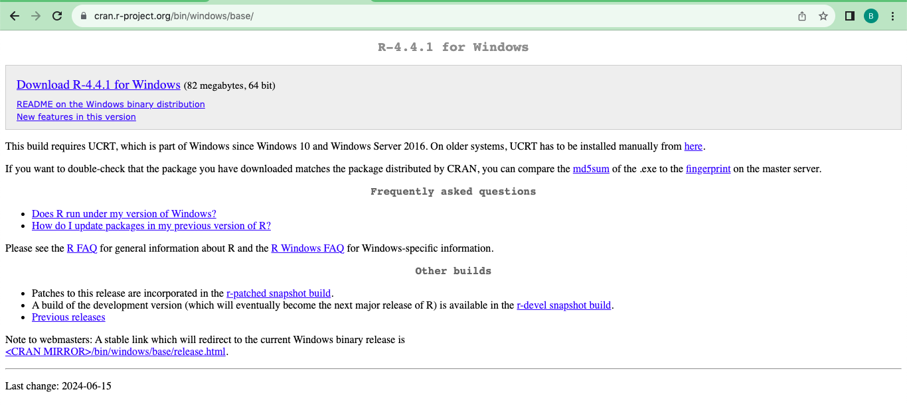
(Lakukan instalasi dengan membuka file tersebut dan menyetujui segalanya.)
Setelah itu, muncul laman seperti berikut. Scroll ke bawah sedikit, tersedia beberapa pilihan versi R yang bisa di-download, tergantung versi macOS yang sedang digunakan.
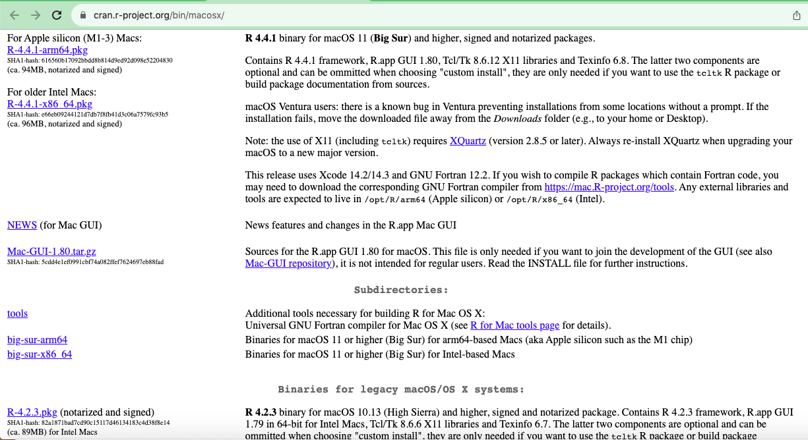
Pada gambar di atas, versi R terbaru yang tersedia adalah R-4.4.1 untuk versi minimum macOS 11. Tersedia dua tautan untuk men-download versi R tersebut, yaitu
R-4.4.1-arm64.pkg untuk Mac M1, M2 dan seterusnya, yaitu menggunakan prosesor Apple Silicon
R-4.4.1-x86_64.pkg untuk Mac yang dirilis sebelum M1, yaitu menggunakan prosesor Intel
Apabila versi minimum macOS terpenuhi, silakan pilih tautan download yang lebih cocok di antara kedua pilihan tersebut.
Namun, apabila versi macOS yang sedang digunakan tidak memenuhi kriteria di atas, scroll lagi ke bawah untuk melihat pilihan versi R yang terpenuhi versi minimumnya untuk macOS.
Contohnya, di bagian bawah pada gambar di atas, terlihat pilihan download R-4.2.3.pkg yaitu R versi 4.2.3, untuk versi minimum macOS 10.13.
Setelah memilih dan menekan tautan tersebut, R akan mulai ter-download. Setelah selesai, bukalah file .pkg tersebut. Akan muncul tampilan seperti berikut. Tekan “Continue”.
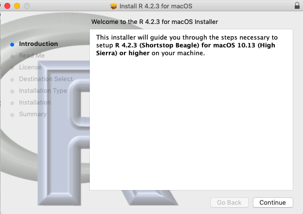
Kemudian, ada sedikit penjelasan tentang versi yang sedang diinstal, seperti berikut. Tekan “Continue”.
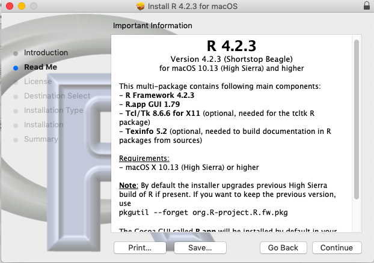
Ada sedikit himbauan tentang lisensi yang digunakan oleh R, yaitu GNU GPL, seperti berikut. Intinya, software ini bebas digunakan dan disebarkan secara gratis. Tekan “Continue”.
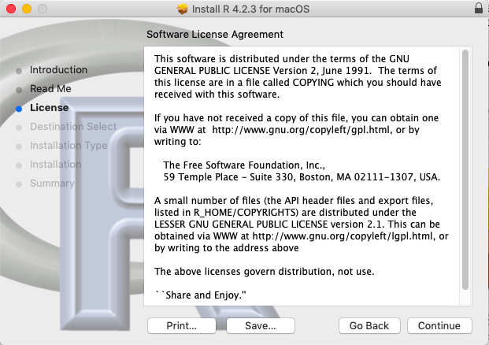
Muncul semacam permintaan konfirmasi terkait persetujuan lisensi, seperti berikut. Setujuilah dengan menekan “Agree”.
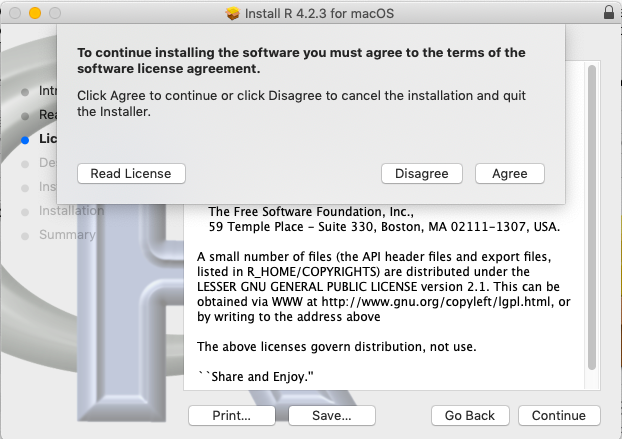
Ada konfirmasi tentang tempat men-download dan storage yang dibutuhkan. Tekan “Continue”.
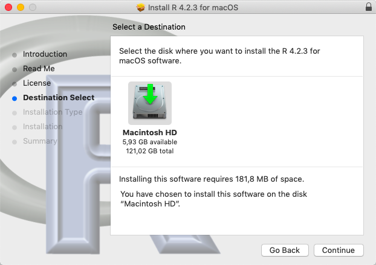
Ada konfirmasi sekali lagi sebelum benar-benar memulai instalasi. Setelah yakin, tekan “Continue”.
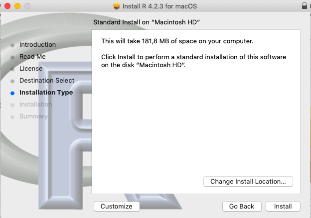
Bisa saja muncul konfirmasi sekali lagi, seperti berikut, kali ini membutuhkan password untuk laptop yang digunakan. Masukkan, lalu tekan “Install Software”. Kalau laptop yang digunakan sebenarnya tidak terpasang password, langsung tekan “Install Software” tanpa mengetik apapun.
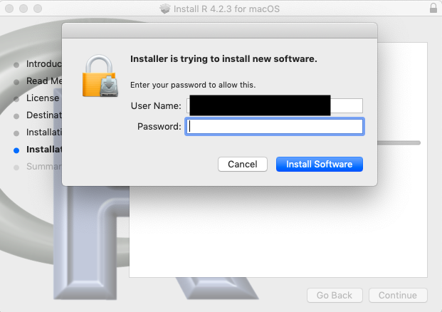
Instalasi akan berjalan selama sekitar beberapa menit, dengan tampilan seperti berikut. Harap ditunggu, boleh sambil melakukan hal lain.
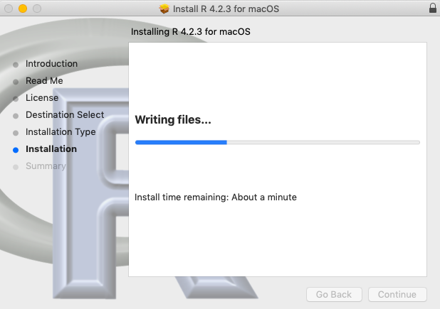
Setelah instalasi selesai, tampilan akan seperti berikut. Tekan “Close”.
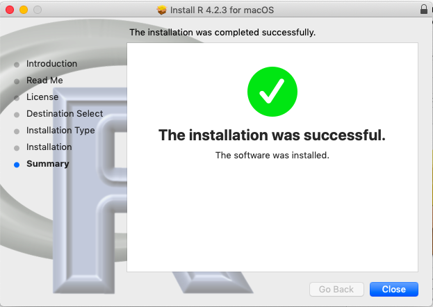
Sebelum benar-benar menutupnya, ada konfirmasi apakah installer yang telah di-download sebelumnya itu ingin tetap disimpan atau dihapus. Pilihan ini terserah, tetapi sangat dipersilakan untuk menghapus, karena R akan tetap bisa digunakan walaupun installer-nya sudah dihapus.
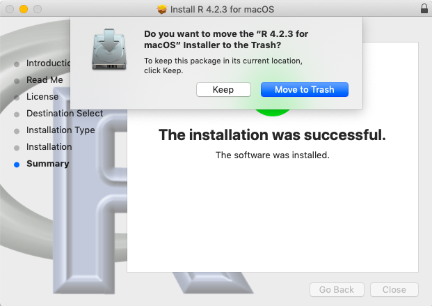
Silakan buka folder “Applications”, kemudian scroll ke bawah hingga menemukan R, untuk membuka R.
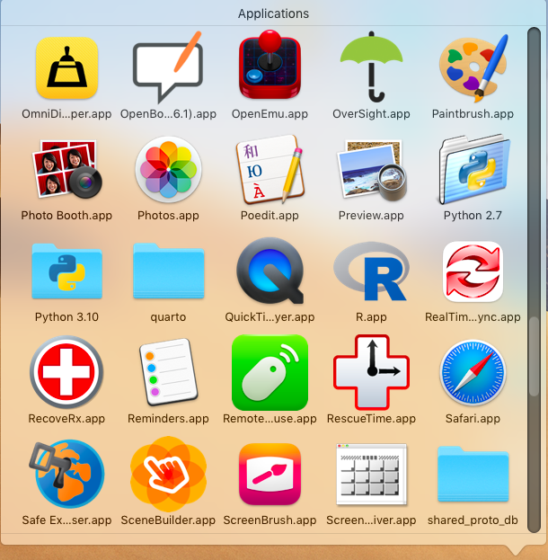
Tampilan R setelah dibuka akan seperti berikut. Perintah-perintah bahasa R sudah bisa diketik dan dijalankan.
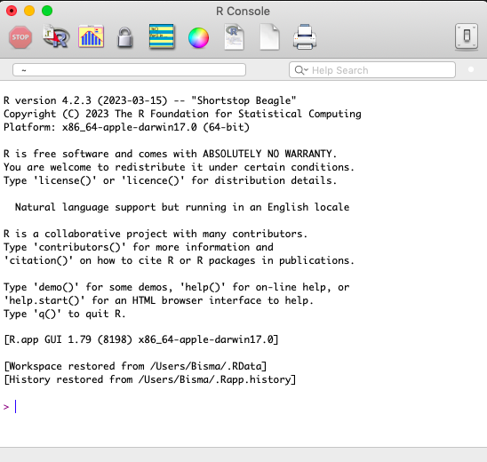
Daripada langsung menggunakan R, sebaiknya gunakan RStudio (yang perlu diinstal secara terpisah) untuk memperoleh tampilan yang lebih nyaman digunakan.
Kunjungi tautan https://posit.co/download/rstudio-desktop/ (atau coba searching “RStudio Desktop” dan pencet website pertama yang muncul). Isinya akan seperti berikut, tergantung operating system yang sedang digunakan:
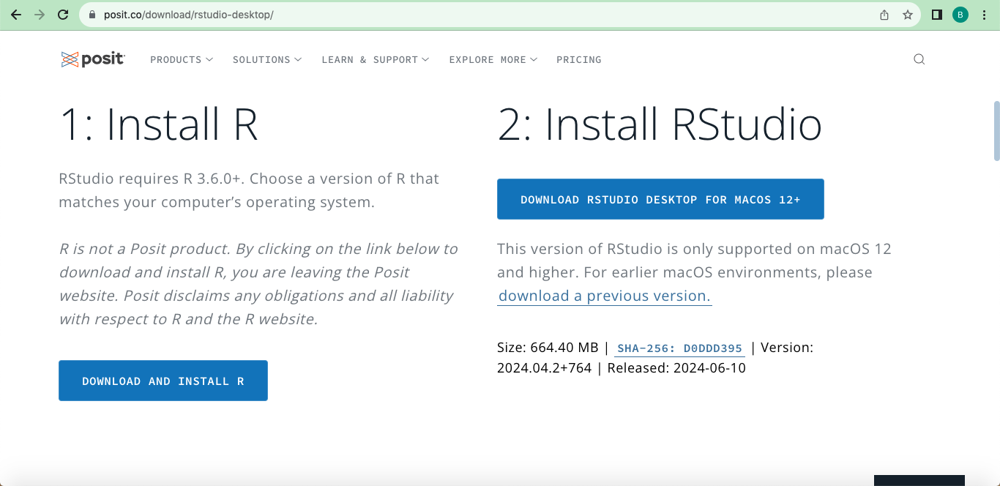
Tekan tombol “Download” di sebelah kanan, apabila memenuhi kriteria versi operating system yang digunakan.
Apabila tidak memenuhi, kunjungi https://dailies.rstudio.com/rstudio/ dan carilah versi RStudio yang kompatibel dengan versi operating system yang digunakan. Tampilan website tersebut seperti berikut.
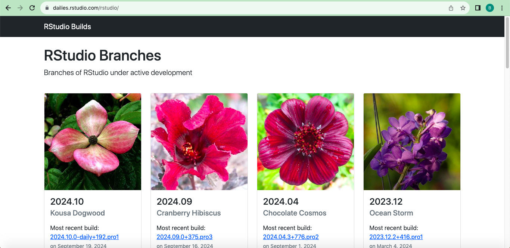
Langkah kedua dan seterusnya tergantung operating system.
Bukalah file yang telah di-download. Akan muncul tampilan seperti berikut.
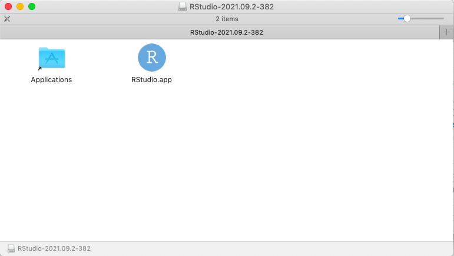
Tarik aplikasi RStudio menuju folder Applications, seperti berikut, lalu lepas.
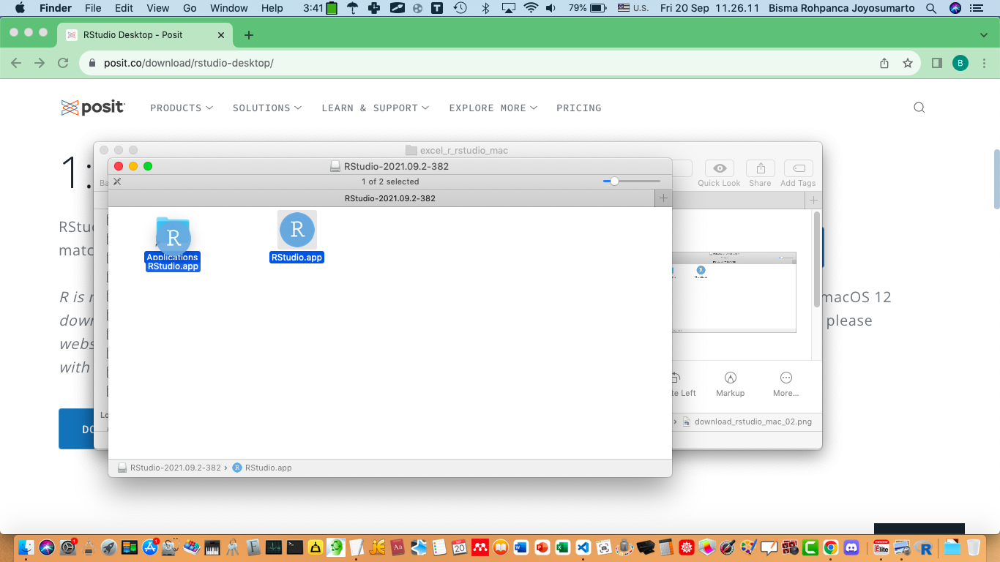
Tunggulah sebentar, karena aplikasi RStudio sedang dipasang di Mac yang sedang digunakan, degnan munculnya tampilan loading seperti berikut.
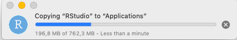
Apabila tampilan tersebut hilang, RStudio sudah selesai terpasang. Silakan buka folder “Applications”, kemudian scroll ke bawah hingga menemukan RStudio, untuk membuka RStudio.
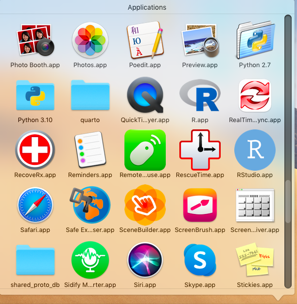
Setelah membuka, akan ada tampilan loading seperti berikut. Harap ditunggu, boleh sambil melakukan hal lain.
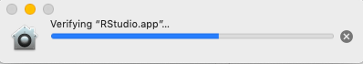
Setelah loading selesai, akan muncul tampilan seperti ini, untuk memastikan bahwa RStudio–yang barusan di-download dari internet–ingin dibuka. Konfirmasikan dengan menekan “Open”.
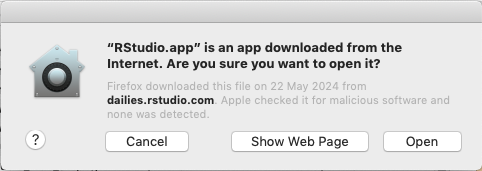
RStudio akan terbuka dengan tampilan seperti berikut. Selamat menjalani praktikum!
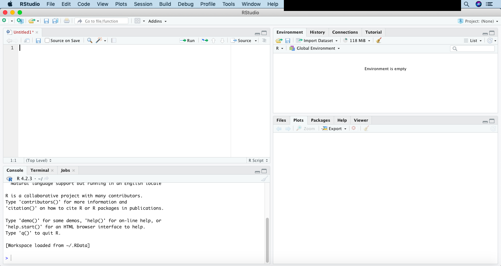
Operasi Dasar. Layaknya matematika pada umumnya, R dapat melakukan operasi dasar.
Cara me-run sebaris program adalah dengan menekan ctrl + Enter
2 + 3[1] 57 - 5[1] 23 * 5[1] 153 / 4[1] 0.752 ** 3[1] 8Pendefinisian variabel pada R dapat menggunakan tanda <- atau =
jeruk <- 8
jeruk # sama seperti print(jeruk)[1] 8apel = 5
print(apel)[1] 5Layaknya sebuah angka, variable tersebut dapat melakukan operasi dasar
apel + jeruk[1] 13apel - jeruk[1] -3apel * jeruk[1] 40apel / jeruk[1] 0.625Variabel juga dapat didefinisikan oleh variabel variabel lainnya
banyakbuah <- jeruk + apel
banyakbuah[1] 13Variabel yang telah terdefinisi dapat dilihat pada environment (sebelah kanan script)

atau menggunakan syntax berikut
ls()[1] "apel" "banyakbuah" "jeruk" untuk menghapus variabel, gunakan fungsi rm
rm(banyakbuah)untuk menghapus semua variabel gunakan
rm(list = ls())